Presentations, Projects & Data Viz
Presentations
Projects
Data Visualizations
About Me
Source Code
Suggestions / Feedback
Categories
All
(14)
#TidyTuesday
(7)
Animation
(1)
Data Is Plural
(1)
Data Table
(1)
Data Visualization
(8)
Interactive
(2)
Maps
(1)
NFHS-5
(1)
Public Health
(1)
Text Mining
(1)
{gt}
(2)
Random Projects
Author
Aditya Dahiya
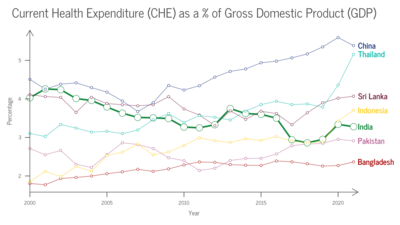
WHO’s Global Health Expenditure Database
WHO’s Global Health Expenditure Database Data, Insights and Analysis
The data originates from the Global Health Expenditure Database (GHED) managed by the World Health Organization (WHO). GHED offers a comprehensive and internationally…
Aug 14, 2024
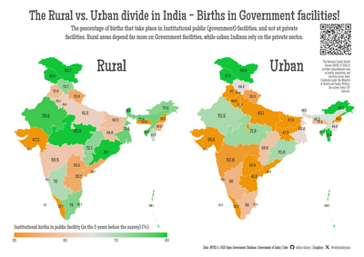
Analysis of India’s NFHS-5 Data
NFHS-5 Data, Insights and Analysis
The Raw Data from the National Family Health Survey (NFHS-5), 2019-21 is shown in Table 1
Aug 9, 2024
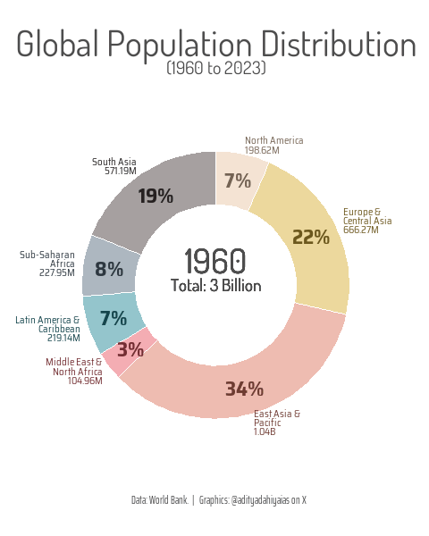
Some ingights on the World Population (1960-2023)
Charts and Visualizations on the Population of different regions using World Bank Data
Global population distribution, visualized through an animated donut chart. Using midyear estimates from the World Bank DataBank and inspired by the compelling visual style o…
May 20, 2024
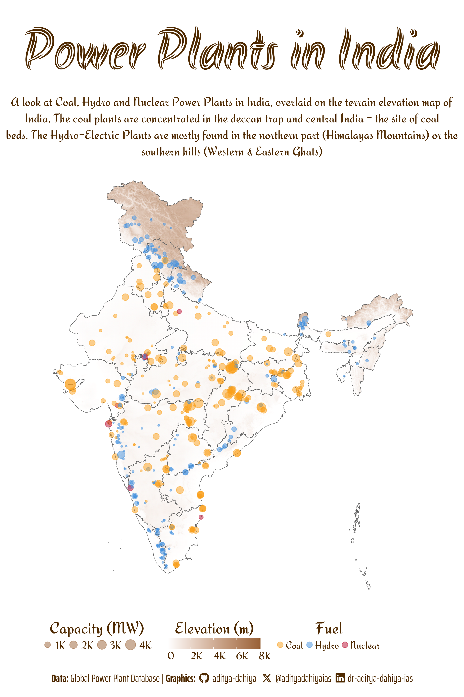
A Rayshader Map for India’s Power Plants
Using Rayshader in R to plot map, inspired by Milos Makes Maps
Using data from , and code from Learn to Make 3D Maps with Light Bubbles using rayshader in R by Milos Popovic
May 15, 2024
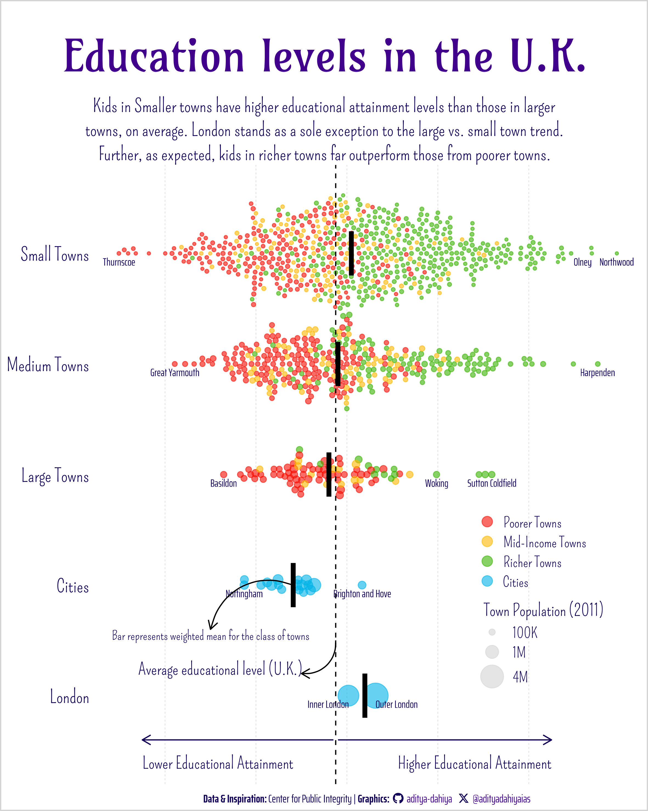
Data Visualization Projects
Examples of Visualizations Created for #TidyTuesday
Hey there, data enthusiasts! Feast your eyes on the visualizations meticulously crafted by yours truly. This spectacle unfolds every week as part of the #TidyTuesday Movement…
Apr 24, 2024
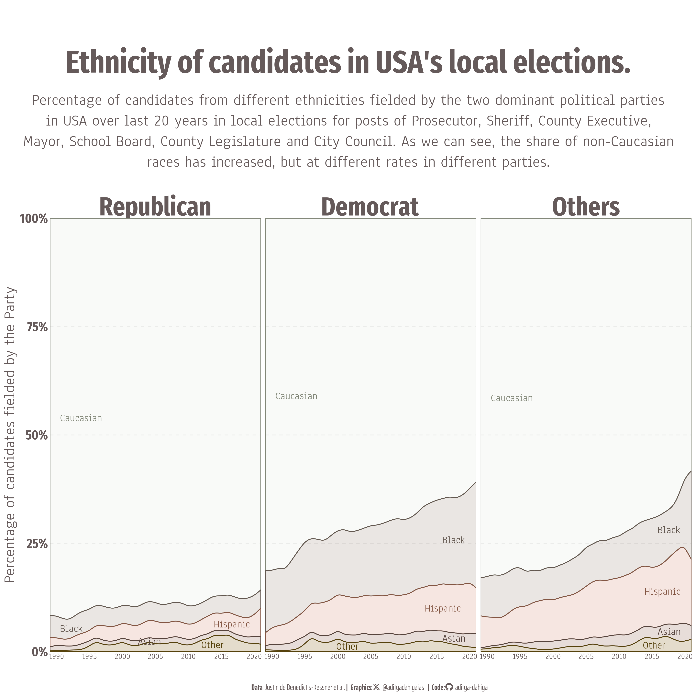
Data Visualizations from D.I.P.
Examples of Visualizations created from the Data Is Plural Newsletter by Jeremy Singer-Vine
Welcome to this webpage showcasing visualizations created using ggplot2, tidyverse, and
R
programming language, utilizing publicly available datasets from the weekly…
Apr 12, 2024
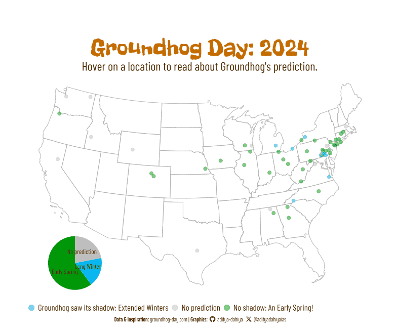
An interactive map of USA’s Groundhogs Day predictors
Initially Created for #TidyTuesday
Using data from Groundhog predictions by groundhog-day.com, first hosted at
#TidyTuesday
Data
Feb 4, 2024
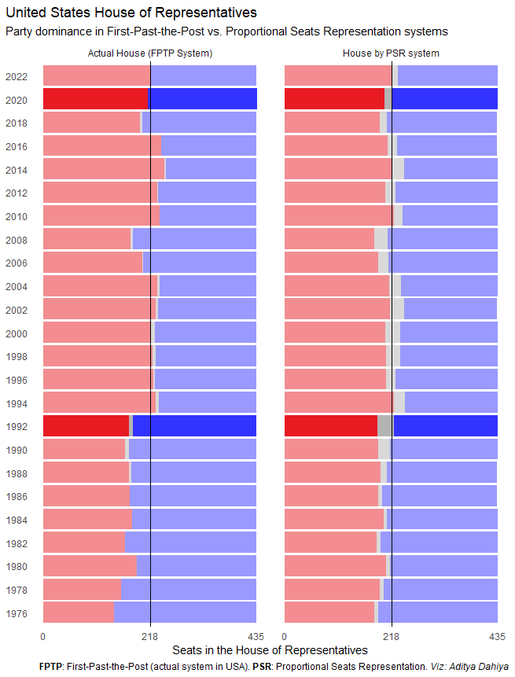
Electoral Kaleidoscope: Visualizing the Impact of Proportional Representation
How the PSR System could’ve changed the 1992 and 2020 US House of Representatives majority party!
In the thrilling world of elections, there are two main contenders duking it out for the title of “Best Voting System”: the classic First-Past-the-Post (
FPTP
) and the…
Nov 12, 2023
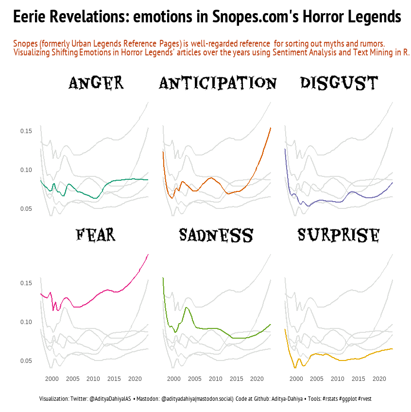
Eerie Revelations: Text Analysis of Snopes.com’s Horror Legends
Looking at the snopes.com articles as a part of #TidyTuesday Week 44 (Oct 31, 2023)
’Tis the season of spookiness, and in the spirit of
#TidyTuesday
, we delve into the cryptic world of snopes.com, a realm filled with explaining (and debunking false) horror…
Nov 2, 2023
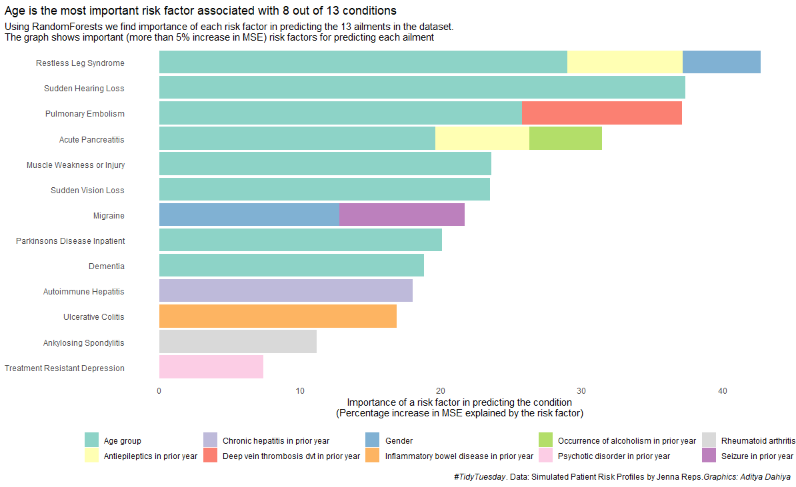
Patient Risk Profiles
Looking at the Jenna Rep’s curated data-set of Patient Risk Profiles as a part of #TidyTuesday Week 43 (Oct 23, 2023)
In celebration of the virtual R/Pharma Conference, we delve into the fascinating realm of Patient Risk Profiles. Thanks to the dedicated work of Jenna Reps, we have at our…
Oct 25, 2023
Making road-maps of cities with Open Street Maps
A user-created function to create street art maps in a single line of code
Here, I have tried to create a user friends single line of code fucntion to recreate street art maps using
OpenStreetMaps
. The inspiration is from the Github Workflow of Evge…
Oct 20, 2023
Dancing Through the Years: A Data-Driven Look at Taylor Swift’s Music
Looking at the W. Jake Thompson’s curated data-set of Taylor Swift songs as a part of #TidyTuesday (Oct 10, 2023)
Getting the data from TidyTuesday Retrieve the data originally from the
taylor
R
package from W. Jake Thompson is a curated data set of Taylor Swift songs, including lyrics…
Oct 18, 2023
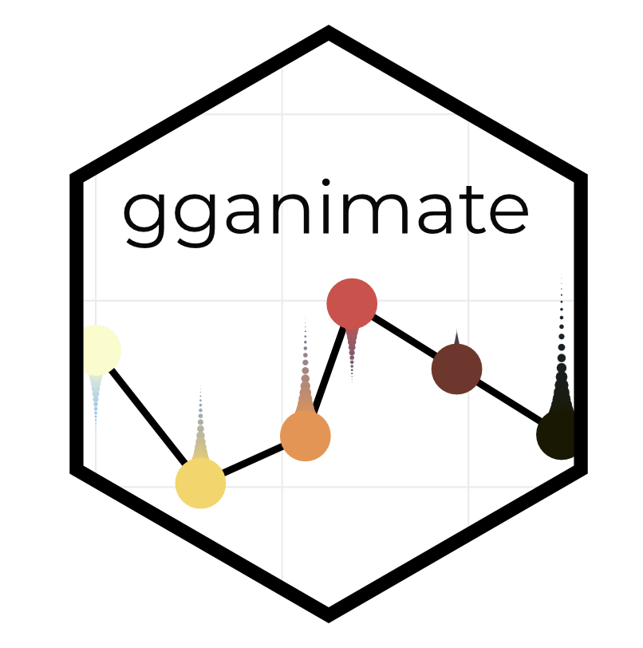
Creating racing bar charts in R with gganimate
Annotated code to create racing bar charts using nycflight13 dataset
We’re about to embark on a thrilling journey through the world of animated
racing bar charts
in
R
- dynamic, action-packed data visualization that showcases the ebb and flow…
Oct 17, 2023
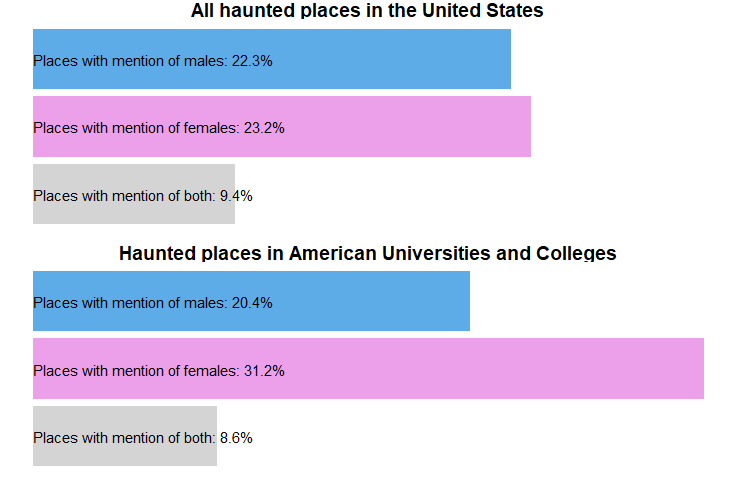
Ghostly Jargon in Haunted Spots: A Gendered Perspective
Looking at the dataset for haunted places in USA as a part of Tidy Tuesday (Oct 10, 2023)
In the eerie realm of American haunts, male spirits outnumber female in most locales. Yet, within the sinister confines of academia, the scales tip towards women. A…
Oct 13, 2023
No matching items